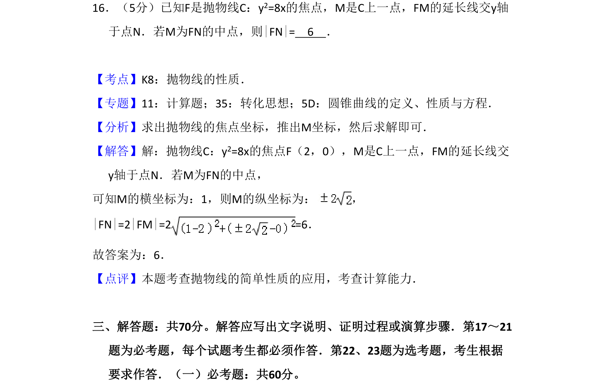
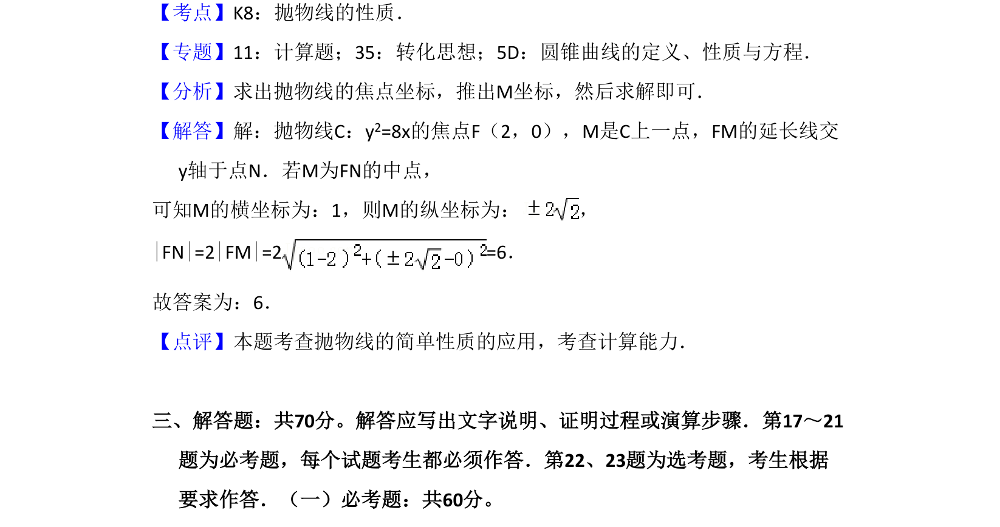

考点：抛物线 焦半径 中点条件 解析几何

抛物线y²=8x焦点F，M在抛物线上，FM延长线交y轴于N，M为FN中点，利用抛物线焦半径和中点条件求|FN|。

📄 原 PDF 第 13 页：
素材/真题/吉林/2008-2024·（吉林）数学高考真题/2017年高考数学试卷（理）（新课标Ⅱ）（解析卷）.pdf
16．（5分）已知F是抛物线C：y2=8x的焦点，M是C上一点，FM的延长线交y轴 于点N．若M为FN的中点，则|FN|= 6 ．
【考点】K8：抛物线的性质．菁优网版权所有 【专题】11：计算题；35：转化思想；5D：圆锥曲线的定义、性质与方程． 【分析】求出抛物线的焦点坐标，推出M坐标，然后求解即可． 【解答】解：抛物线C：y2=8x的焦点F（2，0），M是C上一点，FM的延长线交 y轴于点N．若M为FN的中点， 可知M的横坐标为：1，则M的纵坐标为： ， |FN|=2|FM|=2 =6． 故答案为：6． 【点评】本题考查抛物线的简单性质的应用，考查计算能力． 三、解答题：共70分。解答应写出文字说明、证明过程或演算步骤．第17～21 题为必考题，每个试题考生都必须作答．第22、23题为选考题，考生根据 要求作答．（一）必考题：共60分。